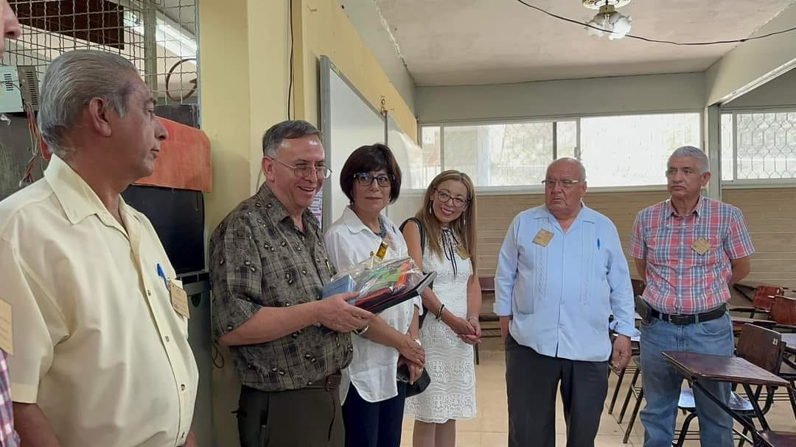
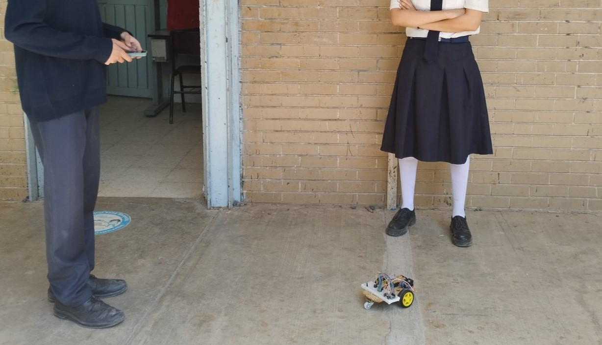
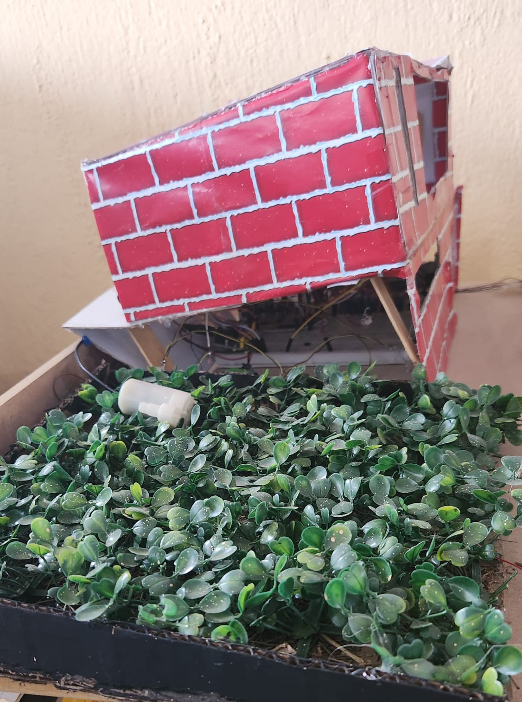
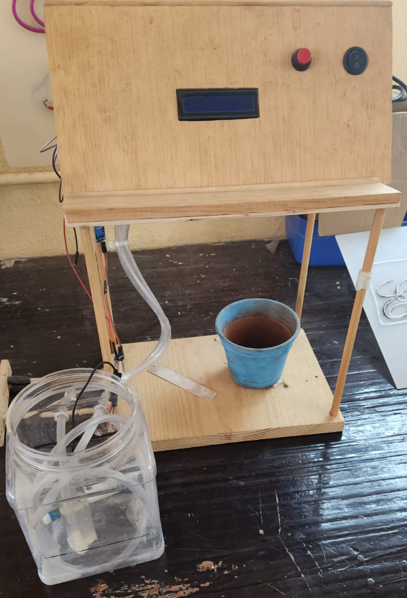

El club robótica empezó en 2023 fundado por el profesor Edilberto Herrejon y actualmente han salido 3 generaciones que enorgullecen a la técnica 65 pues la mayoría de los egresados de robótica continúan con las enseñanzas. Cabe aclarar que el maestro Edi es conocido por todos en la comunidad educativa ya que fue fundador de la Técnica 65 así cómo del taller de electrónica. Actualmente se júbilo de secundarias técnicas, trabajando en otros centros educativos y apoyando a su querida escuela.
La robótica es una rama de la ingeniería y la ciencia que se ocupa del diseño, construcción, programación y aplicación de robots. Estos robots son sistemas mecánicos y electrónicos capaces de realizar tareas de manera autónoma o semiautónoma, imitando o complementando acciones humanas.


Realización de un proyecto que une la tecnología, el cuidado del medio ambiente y el trabajo en comunidad. Se trata del desarrollo de un Sistema de Riego Automático con Arduino, diseñado y construido por estudiantes de tercer grado de secundaria, con el objetivo de aplicarlo en áreas verdes de la escuela y, posteriormente, replicarlo en hogares o espacios comunitarios.

